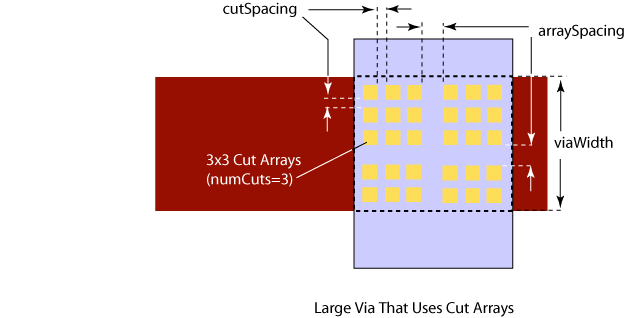

|
 |
 |
||||||
|
|
|
||||||
The built-in layer constraint oacMinLargeViaArraySpacing specifies the number of cuts (numCuts) allowed in a cut array, as well as the minimum spacing required between cut arrays (arraySpacing). The constraint only applies to the spacing between cut-arrays. It does not apply to the spacing between the cuts within an array (cutSpacing).
This constraint is associated with a cut layer. The required spacing is specified as a function of the minimum dimension of the cut arrays (numCuts in the diagram below). For example, the number of cuts in a square NxN array is N; it is not the total number of cuts in the array. If neighboring via arrays have different sizes, the number of cuts in the wider array is used to determine the array-to-array spacing. Note that a via array can be truncated if it does not fit within a wire. In this event, the large via array-to-array spacing is still used in placing the truncated array.
Only one large via array spacing constraint can be specified for a given layer, although multiple via array spacing values can be specified based on different array sizes. It is also possible to specify that the constraint only applies to via arrays on a wire that is greater than a given width (viaWidth). This is specified with the oacMinLargeViaArrayWidth constraint.
| Constraint type: | oaLayerConstraint |
| Value types: | oaInt1DTblValue |
| Database types: | oaDesign, oaTech |
| Object types: | oaAppObject |
The following value types are supported by this constraint:
oacMinLargeViaArraySpacing has the oaInt1DtblValue.
Units: DBU
The following parameters are supported by this constraint:
| Name | Value Type | Units | Default | Description |
|---|---|---|---|---|
| cutClass oacCutClassConstraintParamType |
oaDualIntValue | DBU | None |
This parameter specifies the width and length dimensions of the cut class. |
| parallelOverlap oacParallelOverlapConstraintParamType |
oaBooleanValue | Boolean | False |
If set to true, this parameter specifies that the rule applies only if the cut arrays have non-zero parallel overlap. |

Some fabs require room for oxide slots in the metal between cut arrays in large vias.
Copyright 2002 - 2010 Cadence Design Systems, Inc.
All rights reserved.